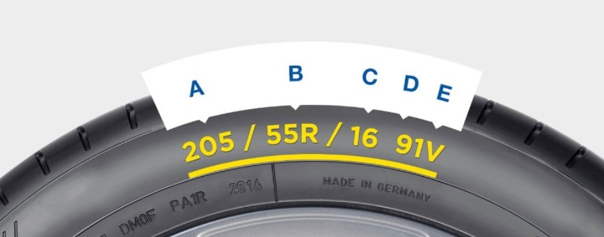

-
引領業界創新 固特異開發出70%永續材質的輪胎
固特異在其2030年以前完成100%永續材質輪胎的目標上又向前邁進一大步。固特異輪胎與橡膠公司日前正式推出永續材質含量達70%的概念胎。
-
利用「T-MODE」建立即時模擬技術與雪地預測技術
利用融合了CAE*1與AI的汽車輪胎開發流程「T-MODE」，新建立了即時模擬技術與雪地預測技術。
-
輪胎感測技術概念
活用AI、數位技術，可視化「輪胎力」，以即時掌握各種車輛所需的輪胎性能極限值及實際的表現。
-
固特異將免充氣輪胎技術延伸到自動機器人上
固特異輪胎與橡膠公司正式宣布其研發已久，且現正進行測試、專為客戶設計的一款免充氣（無氣）輪胎，藉此支援星艦科技的快遞機器人，這些機器人每天都在各種天氣與地形條件下完成數以千計的送貨服務。
輪胎知識
為什麼補胎很重要？
如果您的輪胎連續漏氣或有異響，請立即進行檢查。
輪胎沒氣時繼續使用可能會導致損壞影響您的行車安全。
主流的輪補胎方式可以分為：

補條修補
優缺點：
方便、快速、成本低，但需要再捅一次輪胎，
因此無法保證氣密性和牢固性。
補片修補
優缺點：
比起補條(外補)，更為牢固且更不傷輪胎，
但如果破洞太大，強度會不足。
香菇補片
優缺點：
這種補胎方式在國內並不普及，雖然沒有明顯的缺點，
但價格較高且更為費時。
調胎的好處、調胎的時機
輪胎裝在車輛上的位置可能影響其磨損方式，
因此定期調胎有助於確保輪胎能夠均勻磨損，
藉此延長輪胎壽命並提升其性能表現。
輪胎應每六個月或每一萬公里時進行調胎，
或參閱車主手冊，瞭解是否有建議的調胎時間。
☆單導向輪胎須注意安裝方向，不對稱輪胎需注意inside/outside。
閱讀輪胎胎側的標記
輪胎的胎側包含所有需要的輪胎信息。 這是所有這些數字和字母的含義的小指南：

[ A.輪胎寬度 ]
輪胎的寬度，以毫米為單位，從胎側到胎側測量。
[ B.長寬比 ]
這是輪胎橫截面積與寬度之比，以百分比表示。例如，長寬比為65表示輪胎的高度為其寬度的65％。
[ C.輪徑]
車輪的直徑（高度），以英寸為單位。
[ D.負荷指數]
輪胎的負載指數與其最大承載能力（公斤）相關。您會在直徑的右側找到胎側的輪胎額定載荷。
例如，負載指數為91的輪胎可以承載615kg的重量。
購買新輪胎時，應同時考慮額定載荷和額定速度。另外，請記住檢查製造商的建議。
[ E.速度等級 ]
額定速度是正確充氣並在負載下使用時輪胎的最大速度。額定轉速是側壁上末端的字母，在負荷索引編號之後。額定速度為V的輪胎的最大速度為240 km / h。
購買新輪胎時，請確保其速度等級與車輛的速度能力相匹配。
挑選輪胎的注意事項
根據調查，超過70%的消費者不懂如何選擇適合的輪胎，
而女性車主在購買輪胎時，往往會多花20%的費用。
消費者往往對各輪胎的品牌、價格甚至花紋，都不甚了解。
以下是您應事先考慮的一些事項：
[ 您的開車習慣 ]
在選擇輪胎時確保考慮到您的駕駛風格。
如果您頻繁遠行，應考慮選擇一款行駛里程最遠的經濟胎。
如果您的駕駛風格更趨於運動型，考慮轉向抓地力較高的輪胎。
對輪胎的性能特徵進行評估，有助於您找到一款最適合自身風格的輪胎。
[ 本身車輛性能 ]
選擇您的汽車隨附的輪胎（也稱為OE-原始設備輪胎）是因為它們非常適合您的汽車，
通常汽車廠家會選擇能滿足最大範圍買主需求的輪胎。
車主手冊可能會提供有關各種替換胎的信息，這些輪胎可以優化您的汽車的性能和操控性。
[ 價格預算 ]
儘管我們不可能準確地告訴您輪胎能夠使用多久，或有助於節約多少燃油，
但可以根據您的駕駛需求和預算給您建議。